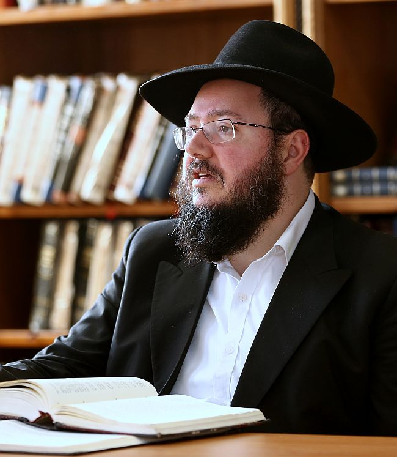

בשקט, בצניעות אך בבטחה הוא מפלס לעצמו דרך כאחד מחשובי פוסקי ההלכה החב”דיים בדורנ
בשקט, בצניעות אך בבטחה הוא מפלס לעצמו דרך כאחד מחשובי פוסקי ההלכה החב”דיים בדורנו, הלא הוא הגאון החסיד הרב מיכאל שלמה אבישיד, רב קהילת חב”ד ברמה א’ בבית שמש, ראש כולל ושליח ומרבני “מכון הלכה חב”ד” * בשיחה שקיימנו עמו לקראת כ”ד בטבת, יום ההילולא של אדמו”ר הזקן, שוחחנו על חשיבות לימוד ההלכה לא רק בקרב
בשקט, בצניעות אך בבטחה הוא מפלס לעצמו דרך כאחד מחשובי פוסקי ההלכה החב”דיים בדורנו, הלא הוא הגאון החסיד הרב מיכאל שלמה אבישיד, רב קהילת חב”ד ברמה א’ בבית שמש, ראש כולל ושליח ומרבני “מכון הלכה חב”ד” * בשיחה שקיימנו עמו לקראת כ”ד בטבת, יום ההילולא של אדמו”ר הזקן, שוחחנו על חשיבות לימוד ההלכה לא רק בקרב אברכים אלא גם ‘בעלי-בתים’, על הדרך שפילס לעצמו בפסיקת הלכות, וגם על סיפור חייו האישי והמרתק בהתקרבותו לליובאוויטש * איש ההלכה

אי אפשר שלא להיכבש כבר מהרגע הראשון מהצניעות האופיינית, ומהעדינות החסידית הנסוכה על פניו של הגאון החסיד הרב מיכאל שלמה אבישיד.
הוא לא איש של גינונים ולא של מניירות; רחוק מזה לגמרי. לא צריך את עדותם של מאה וחמישים בני הקהילה שלו בבית שמש, או מאות האברכים שלמדו בכולל שלו במשך השנים. די בחמש דקות של שיחה איתו, כדי לדעת שמדובר באברך חסידי עדין נפגש - מחד גיסא; ובגאון אדיר - מאידך גיסא.
“אני עובד בשקט”, אלו היו שלוש המילים הראשונות שפתח בשיחה שקיימתי עמו השבוע לרגל כ”ד בטבת, יום ההילולא של אדמו”ר הזקן. חלקה של השיחה נסבה על החשיבות בלימוד הלכות, ובעיקר מתוך שולחן ערוך אדמו”ר הזקן.
“בשנת תשס”ח הקמתי בביתר עילית כולל שהיה בו משום חידוש. כולל זה הכשיר את האברכים ללימוד הוראה במסלול לימוד לא–קל שנמשך על פני ארבע שנים. באותן שנים, זה לא היה מצוי כפי שזה היום”, הוא אומר. “רציתי שאברכי הכולל יוכלו לעמוד בכל אתגר שניצב בפני רב בקהילתו. כשהצעתי את רעיון הכולל בפני הרב אשכנזי ע”ה, ויבלחט”א הרב ירוסלבסקי, אמרתי להם שבדעתי להכשיר דור של שלוחים שגם יהיו רבנים אמיתיים, ויוכלו לפסוק על שאלות הלכתיות”.
מאין הגיע הרעיון?
“יש שיחה מפורסמת של הרבי בי’ שבט תשל”ו, שם הוא אומר שהמצב הוא בגדר פיקוח נפש, וחסרים רבנים שיידעו להכריע באורח חיים, אבן העזר ויורה דעה. רוב כוללי לימוד הלכה שפעלו באותה תקופה, גיבשו מסלול בן שנה, מקסימום שנתיים. אבל אני ביקשתי לתת לאברכים את כל הכלים כדי שיידעו לפסוק הלכות בכל תחומי החיים, תוך כדי לימוד מתוך השו”ע ונושאי כליו, לצד בירור ודיון בהלכות מעשיות מודרניות בנות ימינו, על מנת לפסוק בהן מתוך בירור של הלכה.
“למען האמת, הרבנים קצת פקפקו בהתחלה. וכי מדוע שאברך או בחור יתעניין בלימוד הלכה במסלול כה ארוך?! אבל הכולל יצא לדרך ועם הזמן גם כוללים אחרים אימצו פחות או יותר את השיטה שלנו, מה שמראה על הצלחה”.
הרב אבישיד לא עושה הנחות לאברכי הכולל שלו. הוא מלמד אותם שיעורים מעשיים ופרקטיים, עם כל השאלות שרב קהילה עלול להיתקל בהן. הן בתחומי טהרה, בתחומי רפואה, בהלכות שבת ועוד. “לא פוסחים על שום שאלה מודרנית שקיימת”. אברכי הכולל עוברים מבחנים מפרכים. “כל מבחן נועד להוציא מהאברך את כל הידע הגלום בו, ולסכם אותו על הדף”, אומר הרב אבישיד ומסביר: “אני חושב שהחבר הטוב ביותר של האדם, זה העט שלו. עם התשובות שהם צריכים להשיב, הם מגלים בעצמם את השליטה שלהם בהלכות”.
לא ייפלא אפוא שכל אברכי הכולל של הרב אבישיד, עוברים את מבחני ההסמכה ב’היכל שלמה’ היוקרתיים, בציונים גבוהים. ומדובר בקבוצות רבות של אברכים. רבים מאברכי הכולל משמשים כיום במשרות רבניות חשובות בארץ הקודש ובצרפת. “אני מסייע להם להגיע לתפקידי רבנות, אני מכוון אותם ומלווה אותם בדרכם. הם מצדם שומרים איתי על קשר עם כל השאלות שהם מתקשים לענות לבד”.
משפחת אבישיד חזתה ברוח הקודש
הרב מיכאל שלמה אבישיד, 43, מכהן כרב שלוש קהילות חב”ד ברמת בית שמש א’. הוא עומד בראש כולל אברכים “תורה אור” בביתר עלית, שליח לדוברי צרפתית בבית שמש, ומהרבנים הבולטים ב”מכון הלכה - חב”ד” שבא בשנים האחרונות לתת מענה לאלפי חסידי חב”ד שמבקשים כתובת הלכתית רצינית וזמינה.
אי אפשר שלא לזהות את האקצנט הצרפתי שבדבריו. את שנות ילדותו ונערותו עשה בברינוואה, אבל לא, לא מאותו מקום המוכר לחסידי חב”ד. משפחתו התגוררה קילומטר בלבד מהישיבה החב”דית המפורסמת, אך משפחתו נטתה יותר לשיטה הליטאית, וזו הסיבה שאביו מעולם לא עלה להיכל הישיבה החב”דית.
סיפור התקרבותם של בני המשפחה לחב”ד - הוא מרתק ומיוחד. “גדלתי בבית שומר מצוות, ועד גיל 13 למדתי בבית ספר שלמדו בו חצי יום לימודי קודש וחצי יום לימודי חול.
באחד הימים של שנת תשמ”ה קרה מקרה במשפחה שלנו, ואחד מדודיי נקלע לעניין כלשהו. ידענו שעל פי טבע אי אפשר יהיה לסדר את העניין, והוא זקוק לנס. לא פחות. דוד אחר שלי, אח של אמא, היה חסיד חב”ד, והוא הציע לאמא לנסוע לרבי מחב”ד ולבקש את ברכתו.
אמא שלי, אחותה ובתה, כלומר אחותי בת ה–10, נסעו יחד לניו–יורק. אחותי בת ה–10 הייתה כל כך כאובה מהמצב, שלאורך כל הטיסה בת שמונה השעות, לא פסקה מלומר תהילים. אפילו אמא הפצירה בה שתנוח קצת, אבל היא סירבה. ספר התהלים לא מש מידה.
“כשאמא הגיעה לקראון הייטס, היא אמרה שהיא רוצה לפגוש אישית את הרבי. כששאלה היכן ביתו של הרבי, מישהו כיוון אותה לתומו לרחוב פרזידנט. היא לא ידעה את סדר המקום ופשוט דפקה בדלת הבית. אחד המשב”קים יצא החוצה והסביר לה שכאן אסור להפריע לרבי, ואפשר לפנות דרך המזכירות ב–770.
“כמה דקות לאחר מכן, נכנס לחצר הבית רכבו של המזכיר הרב קליין, והרבי יצא מביתו לכיוון הרכב. אמא רצתה לגשת לרבי, אבל נוכח מראה פניו, נעתקו המילים מפיה עד שלא יכלה להוציא מילה. הרבי מצדו נפנף לשלום ונכנס לרכב. אמא התעשתה קצת והעזה להתקרב לחלון הרכב, אך גם הפעם לא הייתה מסוגלת להוציא מילה.
“פתאום הרבי אמר משהו לרב קליין, שיצא מיד ממכוניתו, ושאל את אמא אם היא מבינה אנגלית. אמא השיבה בחיוב. עמדו שם אמי, אחותה, ואחותי הצעירה. ‘הרבי אמר לי לומר לך, שצריך להתפלל לקב”ה, אבל ה’ כבר שמע את התפילות של הילדה’, אמר הרב קליין והצביע לעבר אחותי… זה היה רוח הקודש גלויה. אמא לא החליפה מילה עם הרבי, אבל הרבי אמר לה שה’ כבר שמע את התפילות של אחותי שהתפללה מתוך קירות לבה לאורך הטיסה כולה.
“החוויה הזאת הפכה את אורח חייה של אמא בו במקום. היא התקשרה ‘קולקט’ לצרפת, והודיעה לאבא ‘מעכשיו אני מורידה את הכובע ושמה פאה’. אמא ואחותי חזרו משם חב”דניקיות בלבן ובנפשן…
“שתיהן אמנם התקרבו לחב”ד בצעדי ענק, אבל אבא, שבא מאסכולה ליטאית, לא הסכים לשנות את אורח חייו הליטאי. הייתי ילד צעיר אבל אני זוכר את זה. זה כאב לה מאד, ולקראת י”א ניסן תשמ”ז, לפני פסח, נסעה במיוחד לרבי, וביקשה במהלך חלוקת הדולרים שהלב של בעלה ייפתח לחסידות. זו הייתה הבקשה שבגינה נסעה במיוחד לרבי.
“באותה תקופה גרנו בברינוואה, מרחק קטן מהישיבה, אך לא פקדנו את המקום אף פעם. יום אחד אבא שלי, שמבין במכונאות, סייע ליהודי שהיה שם לתקן את מכוניתו. כשסיים לתקן את התקלה, הציע הלה לאבא לעלות לישיבה ולהתפלל כעת תפילת מנחה, ואבא ניאות. זו הייתה הפעם הראשונה שנכנס ל’זאל’ הישיבה. אחרי מנחה ניגש אליו הרב שמואל לבקובסקי, ושאל אותו אם הוא מכיר ויודע מהו ספר ה’תניא’. התפתחה ביניהם שיחה ובאותו מעמד אבא שמע שיעור ראשון בתניא. הדברים מצאו חן בעיניו, ומאז החל לעלות לישיבה בתכיפות עד שהפך לחסיד חב”ד. זה היה שבועיים וחצי אחרי שאמא חזרה מהרבי… גם זה מופת מיוחד.
התקרבות בלתי–צפויה לחב”ד
למרות כל זאת, מיכאל הצעיר לא הצטרף למגמת ההתקרבות החסידית של בני משפחתו. “מגיל צעיר הייתה לי דעה מאד ברורה”, הוא אומר, למרות שהוא מסייג “אין ספק שזה היה גם בהשפעה של החברה והמורים שלי שהיו אנטי חב”ד ממש”.
אחד הבחורים בישיבה בברינוואה, תלמיד–שליח, היה הרב מנחם מענדל פרידמן, שקבע לעצמו מנהג לחזור בשבתות על שיחות של הרבי בבתי כנסת שונים באיזור הישיבה. הוא דיבר רק עברית ולא ידע צרפתית.
“בשבת פרשת בא תשמ”ח, נכנס לבית הכנסת הספרדי בו התפללתי. הוא אמר שהוא רוצה לומר כמה מילים, אך אינו יודע צרפתית. הוא שאל אם יש מישהו שיכול לתרגם את דבריו. כיוון שידעתי את שתי השפות, הסכמתי לתרגם בעבורו.
“תוך כדי שהוא מסביר את הרעיון של הרבי, ואני מתרגם את דבריו, התחלתי להתרגש מעומק הדברים. מרוב התפעלות חזרתי על הדברים לאחר מכן בשולחן השבת המשפחתי, וכשהגעתי לבית הספר, ביקשתי לדבר בפני התלמידים בארוחת צהריים. היו שם כמאתיים תלמידים עם כל הצוות, ולאחר שקיבלתי רשות, חזרתי על השיחה של הרבי… מאז רציתי ללמוד עוד ועוד שיחות…
“קניתי את כל החלקים בעברית של ‘לקוטי שיחות’, והתחלתי ללמוד בהתלהבות עוד שיחה ועוד שיחה, עד שרציתי להיכנס ללמוד בישיבה בברינוואה. אבא לא כל כך רצה בזה, שכן העדיף שאשלים את לימודי החול, אבל כיוון שהייתי מצטיין וקפצתי שתי כתות, וכיוון שלחצתי עליו מאד, נכנע לבקשתי ואמר לי ‘טוב, תלך לישיבה ותבדוק כיצד תוכל להתקבל’. הלכתי לישיבה והבעתי את רצוני בפני הרב יצחק נעמנוב. הוא אמר לי שאם אני יודע שלושה דפים גמרא רש”י ותוס’, אז אוכל להיבחן. במקום בו למדתי, למדו רק גמרא רש”י.
“לא היססתי, ובסוף ה’סדר’, דפקתי על השולחן ב’זאל’, ושאלתי אם מישהו יוכל ללמד אותי שלושה דפי גמרא עם התוספות. אחד הבחורים הסכים, ומאז הייתי בא כל ערב עד שלמדנו הכל. נבחנתי, ובימים הבאים כבר נכנסתי לישיבה”.
הרבה אנשים השפיעו על אבישיד בישיבה, הן ביראת שמים שלהם - כמו הרב יצחק נעמנוב, הרב אהרן יוסף בליניצקי. מי שהשפיע עליו רבות, עד היום הזה, הוא ראש הישיבה הרב יחיאל קלמנסון. “הדמות התורנית שלו והידע הפנומנלי שלו, וההבנה העמוקה שלו, נתנו לי חשק בלימוד”.
במקביל, הקשר עם הרבי הלך והתהדק. עד ג’ תמוז, נסע הרב אבישיד לרבי שבע–עשרה פעמים. בכל שנה פעמיים לפחות. הפעם הראשונה הייתה תשרי תשמ”ח (ראה מסגרת).
חבריו לישיבה מספרים, כי כבר בהיותו בחור זכה לסיים את הש”ס. בשנת תשנ”ז נשא לאישה את רעייתו מרת בתיה, בת ר’ ניסים אליהו אדרעי מכפר חב”ד, וקבע את מגוריו בסמיכות להורי אשתו, כשהוא מקדיש את עתותיו ללימוד סמיכה לרבנות, ואף נבחן והוסמך על ידי גדולי הרבנים לרבנות ולדיינות.
איש ההלכה
בשנת תשנ”ט התמנה לשמש כראש מכון ללימודי ‘איסור והיתר’ בירושלים, והחל למסור שיעורים בכולל להוראה בהלכות טהרה ושבת. בעקבות תפקידים אלו עבר להתגורר ברמה א’ בעיר בית שמש.
תוכל לספר קצת על הקהילה שלך?
“ברמה א’ של בית שמש, ישנם שלושה בתי כנסת חב”דיים ובהם כמאה וחמישים משפחות. בית כנסת אחד הוא לדוברי אנגלית, אותו מנהל הרב פארו. בבית הכנסת השני נמצא המשפיע הרב צבי הרטמן, ובאמצע נמצאת קהילת ‘אור ליובאוויטש’. אני נותן שיעורים בעיקר בשני בתי הכנסת.
“כיון שברמה א’ יש קהילה צרפתית גדולה, והרב ויינר מינה אותי לשליח שלהם, ומלבד שאר עיסוקיי, יש לי איתם שיעורים מדי שבוע בחסידות ובהלכה. רבים מהם, למרות שאינם חסידי חב”ד, עמדו בעבר בקשר עם חב”ד בצרפת.
כרב וכאיש הלכה מובהק, הרב אבישיד מדרבן כל הזמן את אנ”ש בקהילתו ללמוד הלכה וחסידות, ולשם כך הקים כולל ערב. “חשוב מאד שהקהילה תהיה למדנית”, הוא אומר, “זה משפיע על כל האווירה בקהילה. כשבעלי בתים מגיעים אחרי יום מייגע, והם פוגשים אנשים שהם מכירים, חווים אווירה של לימוד, זה נותן חשק ללמוד (בשונה מלימוד על הספה בסלון הבית). זה נותן טון אחר לכל הקהילה.
“אני בוחר סימני הלכה מעשיים שיש בהם לימוד לחיי היום יום, ואני הופך אותם למעניינים. אנחנו הולכים לבדוק מה עומד מאחורי הרעיון של קביעת הלכה זו וזו, ובונים את הנושא מכל הצדדים. יחד עם הפרקטיות שבנושאים, זה מעורר אנשים; שאלה גוררת שאלה, וזה יוצר דו–שיחה שלפעמים נמשך גם באמצע היום שלמחרת. לא פעם אני מקבל הודעות במשך היום שאנשים נזכרים בענין הלכה שלמדנו, ורוצים לפתח את הנושא.
“אני מאחל את זה לכל קהילה, שיהיו להם ‘בעלי בתים’ שנפגשים מדי ערב ללמוד הלכה”, אומר הרב אבישיד בסיפוק רב.
ברשותך, מאיפה הגיע לך החיות הזאת בעניני הלכה דוקא?
“מגיל צעיר נמשכתי להלכה. כשהייתי בן 14 בערך, כשהיו לי שאלות בהלכה, לא הייתי ניגש לרב ישירות ושואל מה ההלכה, אלא קודם הייתי ניגש לבדוק לבד את דברי הפוסקים, וכשבאתי לרב, הייתי מוכן עם ידע רב בנושא, ושואל את הרב האם הבנתי נכון את צדדי ההלכה.
“נוסף על כך, אני אדם מעשי באופיי. גם כשהייתי לומד סוגיה בש”ס, תמיד ביקשתי להבין איך אני מתרגם את זה לרובד היום יומי. היה לי חשוב לתרגם את הדברים שאני לומד ולהשתמש בהם ביום יום. החלק המעשי משך אותי. בין השאר, התחזקתי מדברי אדמו”ר הזקן בהלכות תלמוד תורה, שכותב כי דבר ראשון אדם צריך לדעת הלכות בטעמיהן, וזה לפני שהולכים לכיוון של פלפולים”.
במשך השנים הרב אבישיד המשיך לפלס לו דרך בעולם ההלכה, כאשר מצד אחד התייעץ עם רבני חב”ד השונים, ומן הצד השני, ירד לעומקה של הלכה, וכשמצא את הדברים כפי שהבין, לא היסס לחלוק על דעתם של פוסקים שלפניו. הוא מודה בכך בשיחה כנה:
“באישיות שלי אני אדם עצמאי, וכשאני מברר דבר הלכה, אני מתחיל מהגמרא דרך הראשונים ועד גדולי האחרונים. אינני מושפע בקלות ואני בודק בעצמי לעומק כל הלכה, גם אם היו שפסקו כבר הלכה בנושא. אינני מתבייש ללכת לרב ולומר לו שאיני מסכים עם דעתו. לצד קבלת עול הנדרשת, בעניני הלכה צריך להפעיל הגיון מחשבתי ושיקול דעת אישי.
“מן הצד השני, אף פעם לא פסקתי הלכה מבלי לבדוק דעתם של רבנים שהיו לפניי. במשך השנים עמדתי בקשר ידידותי עם הרב אשכנזי ע”ה, ועם הרב ירוסלבסקי. הייתי קשור גם עם הגאון רבי הלל פבזנר מצרפת, ממנו למדתי רבות. כשהייתי לומד סימן בשו”ע, הייתי כותב מסקנות אליהן הגעתי, ולאחר מכן קובע פגישה עם הרבנים ומציע בפניהם את הדברים שמצאתי לנכון, ושואל את דעתו של הרב. אהבתי מאד את חריפות מחשבתו של הרב אשכנזי”.
הרב אבישיד עמל בתקופה זו על הכנת ספרו “מחנה מיכאל” לדפוס. הספר שלו יכלול כמה כרכים, ביניהם על הלכות שבת, אבן העזר, יורה דעה, אבלות, אורח חיים וכו’.
הספר, איך לא, עוסק בליבון הלכות לעומק. “הרבי רוצה תמיד שבחב”ד יראו את היכולת שלהם בלימוד לעומק. זהו נחת רוח מיוחדת של הרבי” אומר הרב אבישיד, ולכן החלק הראשון של הספר שלו, עוסק בסימן אחד בלבד בשו”ע. מנתח אותו ומעמיק בו כהנה וכהנה.
“בספר הזה הכנסתי גם את פסקי אדה”ז והצמח צדק, וכן את הרבי מה”מ כיסודות הלכתיים. במהלך העיון אני מראה ללומד את הלמדנות שלהם והעמקות; אני לוקח מכתב של הרבי ומראה עד כמה הסברות שלו בהלכה הם תשתית בחשיבה הנדרשת לפני שרב פוסק פסק הלכה”.
מעלעול בדפי הספר העתידי, אי אפשר שלא להתרשם מהעומק של הרב אבישיד בדבר הלכה. על כל תת–נושא, ישנם כשלושים–ארבעים עמודים שמלבנים אותו מכל צדדיו. “אני מביא את כל הדעות הקשורות לאותו נושא, החל מהגמרא והראשונים ועד לסיכומים מעשיים הנוגעים לחיי היום יום”.
אתה יודע שבימינו כולם עובדים בשיטת הקיצורים, וכל אחד רוצה לקבל פסק הלכה ברור, קצר ומתומצת ישר לתוך הפה.
“אני מודע לכך שהספר בסגנונו זה לא ימשוך את לבו של כל אחד, אבל המטרה שלי היא להוכיח שהלכה זה מקצוע קשה, וצריך להיות בקי בהלכות ובמקורות שלהם ולהעמיק בהן לפני שרב פוסק את פסקו. שלא יבוא אברך שעשה ‘שימוש’ במשך תקופה, וכבר יחשוב שיודע לפסוק. שוב אצטט לך ממה שכתב אדמו”ר הזקן, שמי שלומד רק את ההלכות ולא את הסיבות להלכה, הרי הוא נקרא ‘בור’, ורק בקושי יוכל לפסוק הלכה לעצמו. לכן לימוד הלכה דרך שו”ע אדמו”ר הזקן דוקא, זה בבחינת ‘לימוד הלכות בטעמיהן’. מכל מקום - מוסיף הרב אבישיד להרגיע - גם בספר הזה, אני מביא בראש כל פרק את פסק ההלכה בצורה מתומצתת, ולאחר מכן אני מזמין כל אחד להתעמק במקורות, וזה כדי להראות עד כמה הלכה זה דבר רציני”.
הלכה לכל שואל
לפני כשנה הצטרף הרב אבישיד לרבני “מכון הלכה - חב”ד”, והחל לפרסם פסקים הלכתיים מנומקים בתפוצה מצומצמת בקהילת חב”ד בבית שמש, אולם חלק מהם זכו לתפוצה נרחבת שעוררה פולמוסים הלכתיים רחבים בציבור החב”די.
עם הזמן התרחבה השפעתו ההלכתית, והוא נמנה על צוות הרבנים שעונים לקהל הרחב שאלות בעניני הלכה באמצעות סמסים, וכן במערכת הטלפונית החכמה “קו לרב”. הרב אבישיד אף מגיה את המדריכים ההלכתיים היוצאים לאור על ידי המכון לקראת החגים.
במשך השנים, הציבור החב”די גדל והתרחב, לצד קהילת המקורבים לחב״ד. באופן טבעי, נוצרות שאלות רבות בהלכה שלא תמיד מקבלות תשובה בגלל העומס המונח על כתפי הרבנים, ולא תמיד מצליחים לתפוס את הרב בטלפון. זו הסיבה שהרעיון להקים את “מכון הלכה חב״ד” הגיע בזמן. והוא אכן חולל מהפכה בתחום. השאלות הרבות שמקבלים הרבנים מידי יום, מוכיח את המצוקה שהיתה בנושא.
ה”קו לרב” וכן האפשרות לשלוח סמס, מעניקים פתרון להפליא, מה גם שהשואל נהנה ממידה רבה של אנונימיות, מה שמקל עליו עוד יותר.
“העובדה שהתשובה שאנחנו נותנים בסמס יכולה להגיע לתפוצה רחבה, גם בפני רבנים נוספים, נותנת לרב תמריץ מיוחד לדייק כמה שיותר בתשובה שלו, והמרוויח הוא כמובן השואל כמו גם העובדה שמקבל התשובה מקיים את ההלכה בצורה נכונה וגורם לה’ יתברך נחת רוח”, אומר הרב אבישיד.
כפי שהתרשמתי ממך, אתה אדם מעמיק שאוהב לפרט ולחקור, איך אתה מסתדר עם תשובות הלכתיות המשוגרות בסמס, כאשר מדרך הטבע הן צריכות להיות קצרות?
“נכון שדרך סמס התשובות הן, בטבען, קצרות יותר, אך פעמים רבות שאני משיב באריכות יותר, מפני הצורך”.
הרב אבישיד שולף את הטלפון הסלולרי שלו ומראה לי שאלה שקיבל: אדם שגר בבניין אשר בלובי שלו נדלק האור באופן אוטומטי עם כניסתו של אדם. האם יש אפשרות להקל עליו בשבת?
הרב אבישיד עונה תשובה קצרה ומתומצתת (“יש להמתין שאדם יכנס לבנין או להגיד לגוי להיכנס כדין פסיק רישיה על ידי גוי”), אך לא מסתפק בכך, ומביא לאחר מכן שורה של מראי מקומות מה שמעיד על הגאונות והבקיאות הנדירה שלו בעניני הלכה. הוא מתחיל בדעת התוספות במסכת שבת ובמסכת כתובות, דרך ‘תרומת הדשן’, ‘מגן אברהם’ ומביא חיזוק מהגהות רבי עקיבא אייגר, ופירכה משו”ת חתם סופר. כן הוא מצטט את דעתם של בעל ה’דגול מרבבה’ ו’הפרי מגדים’, וכן את שיטת הרשב”א והשלטי גיבורים, וכל זה בהודעת וואטסאפ קצרה…
הרב אבישיד מבקש לענות על שאלתי: “היססתי רבות לפני שהסכמתי לענות שאלות בהלכה באמצעות וואטסאפ, אבל הרבי כידוע אומר שצריך לנצל את הכלים של העולם לעניני אלוקות, וכל הכלים המודרניים נבראו אך ורק בשביל קדושה.
“יש אנשים שלא יודעים איך להתבטא, או מתביישים לשאול ישירות את הרב, אז הם יושבים מאחורי מסך סלולרי ומשגרים שאלה. זה מקל עליהם. יש לא מעט מקרים, שלולא הוואטסאפ, אנשים לא היו שואלים כלל. אני חושב שזה מאד מועיל וזה עוזר, אבל כמובן שאדם צריך להשתמש בכלים הללו בסדר מסודר”.
הרב אבישיד משתתק, חושב לרגע, ועם כל ההבנה שלו לסיטואציה, עדיין לא “מוותר” על הסגנון שלו בהלכה “בהחלט כואב לי העניין של חוסר לימוד מעמיק בהלכות והצורך לעיין במקורות”.
השאלות שאתם, רבני מכון הלכה, מקבלים בסמסים, במה הן עוסקות?
“בשאלות שעוסקות בכל רבדי החיים ממש. אין כמעט נושא שאיננו נשאלים עליו”.
זאת ועוד: גילה לי אחד הרבנים, כי ישנה בוואטסאפ קבוצת “שואלין ודורשין” ובה רבנים חב”דיים מכל העולם, שבהם הם מחליפים דעות ורעיונות הלכתיים בנושאים שונים העולים על שולחנם, בבחינת “אסוקי שמעתתא אליבא דהלכתא”. מהר מאד בלט הרב אבישיד בתשובותיו המנומקות והמפורטות והוא אחד הרבנים שדעתם נשמעת הכי הרבה.
בפסגת ההלכה
בשנת תשע”ד זכה הרב אבישיד בתואר “חתן ההלכה”. מדובר במבחן בנושאי הלכה בו השתתפו אלפי רבנים ואברכים מכל העולם. המבחנים הקשים עסקו בעיקר בבקיאות ופחות בעומק עיון ההלכה. הספונסר של הפרויקט הבטיח פרס כספי גבוה מאוד למי שיעפיל ויקבל את המקום הראשון.
“איכשהו נכנסתי לזה, וזה היה מאד קשה. גם אם אתה רב שמורה הוראה והלכה, לא בטוח שתזכה, כי המבחן היה בעיקר מבחן של זיכרון ושליטה בקיאותית” מספר הרב אבישיד בצניעות. “אמרתי לעצמי שהרי אני בטבעי זוכר סימנים ודפים רבים, אנסה…”
לאט לאט העפיל הרב אבישיד בסולם הציונים, כאשר אחרי כל מבחן נשרו נבחנים רבים. לקראת הסוף הוזמנו כחמישים רבנים מארץ ישראל לארה”ב. המבחן האחרון נמשך יומיים תמימים.
“הגוף שארגן את זה, היה גוף ליטאי מובהק, ולא היה פשוט שחב”דניק יזכה במקום הראשון. עברתי משוכות רבות ולא פשוטות שאין כאן המקום לפורטן, עד שלבסוף זכיתי במקום הראשון. לפי התכנון היה צריך להתקיים אירוע גדול ומכובד לכבוד הזוכה, אך הוא בוטל. מכל מקום, אני שמח בעצם הזכיה”.